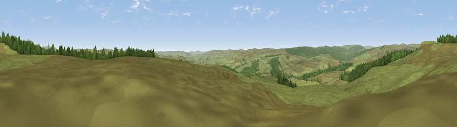

Viewpoint near Rochester
#18557 in England · top 48% of its area beats it · near RochesterWhere it is
The exact computed spot (NY 84325 99225). Click the marker for map links.
The view, rendered

A 360° render of this exact spot computed from the terrain model, tree cover and land cover — summer colours, afternoon light, calibrated against photographs of famous viewpoints. Real trees, hedges and buildings will differ in detail.
The panorama
Grey silhouette: terrain skyline in each direction (720 bearings, Earth curvature and refraction included). Dashed green: skyline with trees (+15 m) and buildings (+8 m) as obstacles. Blue strip: how far the ground is visible on each bearing.
Where the view opens
Wedge length = distance to the farthest visible ground on that bearing (vegetation-aware). Rings at 10, 25 and 50 km.
What fills the view
87% grassland · 13% woodland
Angular shares of the visible panorama (visual magnitude), not map area. Landscape diversity 0.17 (0–1 Shannon).
Key numbers
More beautiful places nearby
The staircase of upgrades: each row has a higher view potential than everything closer. Driving times are estimates from straight-line distance, calibrated against real road routing — check an actual route before setting out.
| Place | Direction | Drive | Score |
|---|---|---|---|
| Viewpoint near Rochester | NNW · 1 km | ~2 min | 59.8 |
| Viewpoint near Rochester | N · 2 km | ~6 min | 66.4 |
| Viewpoint c12037_7784 | ENE · 6 km | ~12 min | 67.1 |
| Viewpoint near Byrness | WNW · 6 km | ~12 min | 73.3 |
| Viewpoint near Byrness | NW · 9 km | ~17 min | 74.0 |
| Cold Law | ENE · 9 km | ~18 min | 76.1 |
| Viewpoint near Byrness | NW · 9 km | ~18 min | 77.0 |
| Viewpoint near Byrness | NW · 9 km | ~18 min | 77.1 |
55.28690, -2.24835 · source: screening · position refined by local search. Computed location — check access rights before visiting.